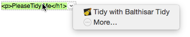
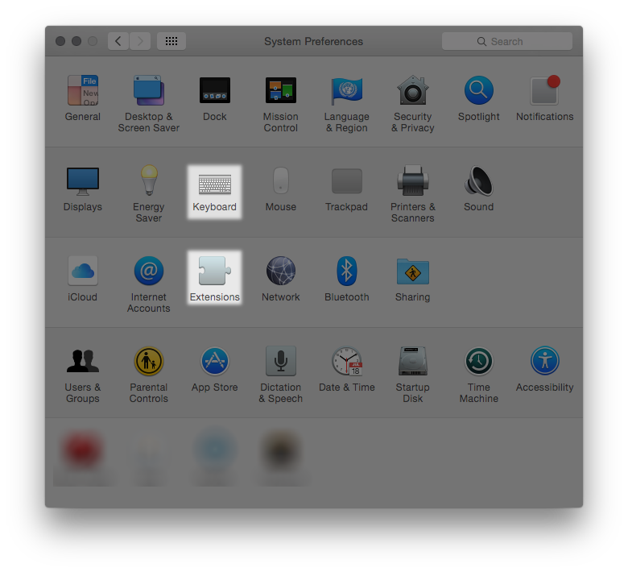
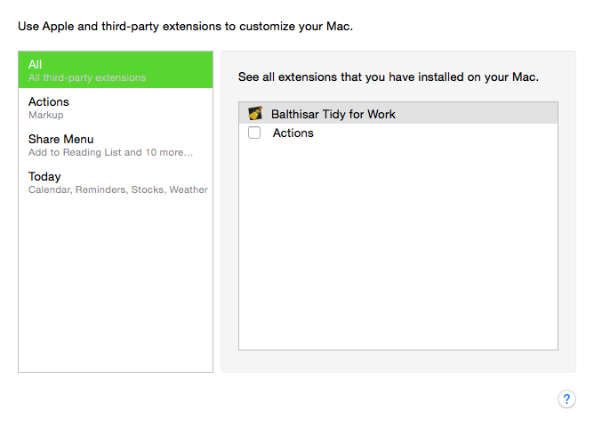

Use Tidy as an Action Extension (Mac OS X 10.10+)
Balthisar Tidy offers its code cleanup and pretty printing facilities as an Action Extension on Mac OS X 10.10 and above.
- Tidy with Balthisar Tidy
- This Action uses the Preferences in Balthisar Tidy to Tidy your
selected text in place. There is no need to start Balthisar Tidy. This
extension will always produce a complete document, regardless of the
show-body-onlysetting in Preferences.This Action Extension is only available on Mac OS X 10.10 and above.
- Tidy with Balthisar Tidy (body only)
- This Action uses the Preferences in Balthisar Tidy to Tidy your
selected text in place. There is no need to start Balthisar Tidy. This
extension is useful for tidying snippets of code without producing a complete
HTML document.
Note that Balthisar Tidy has no idea of your file’s original indentation; Balthisar Tidy will return indented text (if configured to do so), but its base indentation will be zero. You may have to use your application’s block indent feature once your text is tidy'd.
This Action Extension is only available on Mac OS X 10.10 and above.
How to Use Actions
When Balthisar Tidy’s Extension is enabled (see below), it can be used from nearly any Mac OS X application that supports Action Extensions. Simply select the text that you would like to use the Extension on, and then hover over the text until a small, popup indicator appears at the end of the selected text, as shown here in this sample for TextEdit.
You can activate the popup menu to reveal all of the applicable Extensions for the current context, as shown here.

If Balthisar Tidy’s Extension does not appear, then you will have to set it up first.
Setting up Extensions
It’s important to start Balthisar Tidy at least one time before setting up Extensions. This allows Mac OS X to know that Balthisar Tidy is able to provide Extensions.
You configure Balthisar Tidy’s Extension in the System Preferences application using the Extensions control panel as highlighted below.

Alternatively you can use the More… shortcut in an application Action Extension menu as illustrated in the previous section.
In System Preferences, Extensions control panel, All item in the list, you can see all of the installed Services and enable them with the corresponding check box, as shown here.
